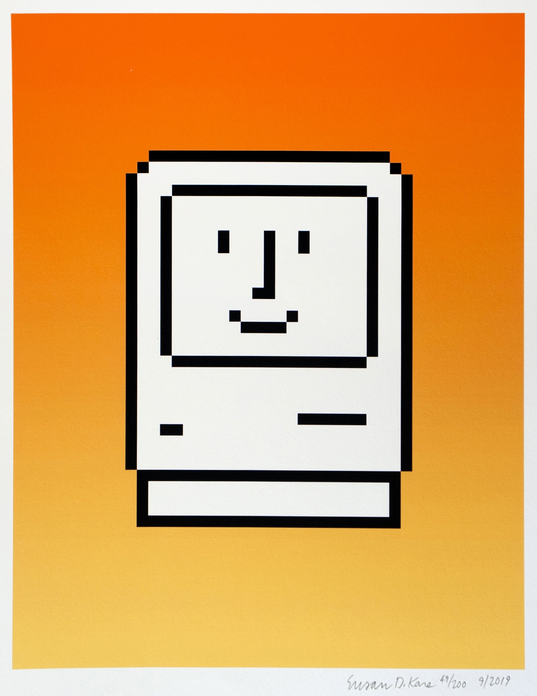
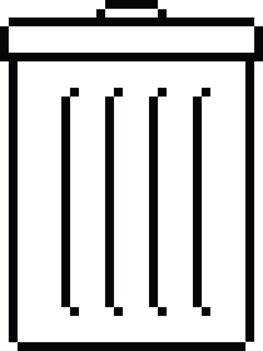
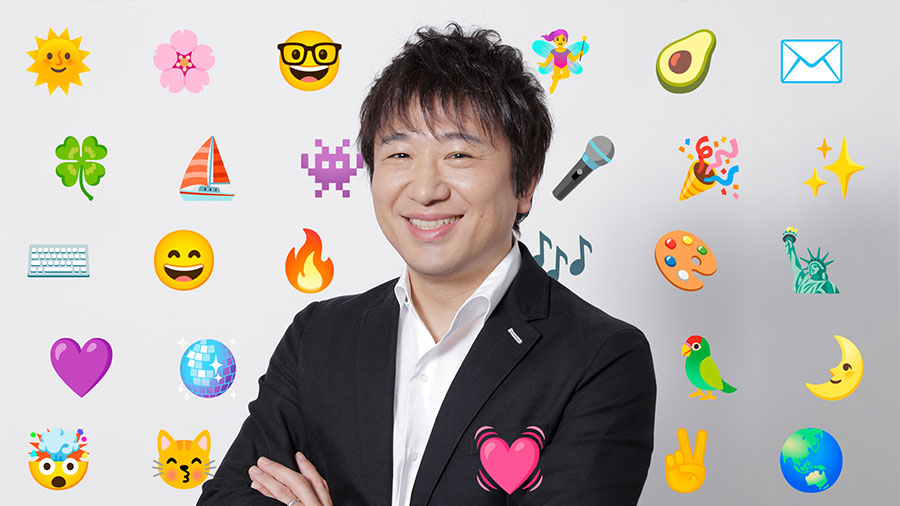
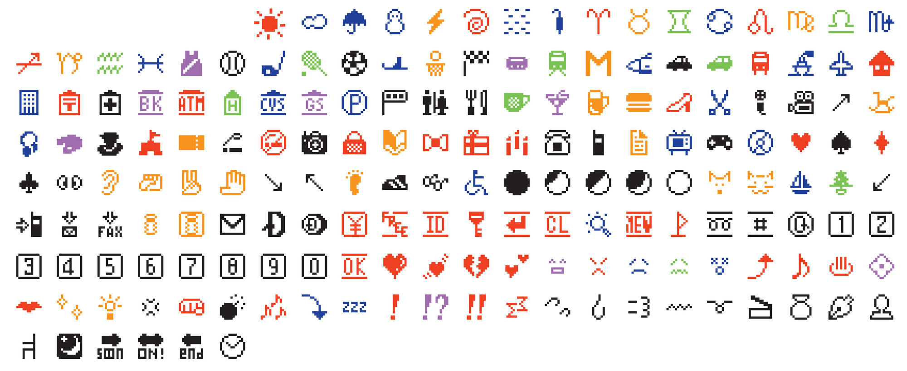

L'Anthropomorphisme en UX/UI
Découvrez comment l'humanisation des interfaces améliore l'expérience utilisateur.
Bienvenue ! Je suis là pour vous guider.
Les Origines de l'Anthropomorphisme en UX/UI
Susan Kare
Créatrice des icônes du Macintosh



Shigetaka Kurita
Père des emoji

Impact sur l'UX/UI moderne
- Interfaces plus intuitives et conviviales
- Communication visuelle universelle
- Expression des émotions dans le numérique
Assistants Virtuels

"Bonjour ! Comment puis-je vous aider aujourd'hui ?"
"Salut ! Je suis là pour répondre à vos questions."
Icônes et Mascottes
Tâche réussie !

Oups, une erreur s'est produite.

Chargement en cours...